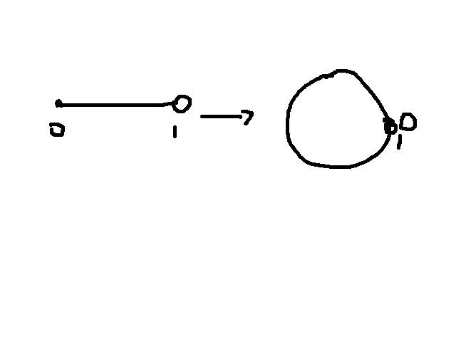
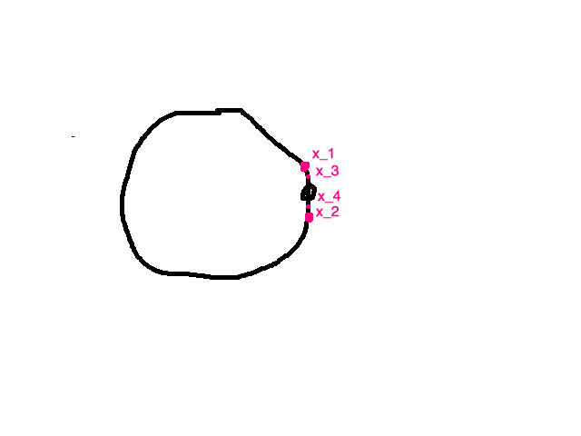
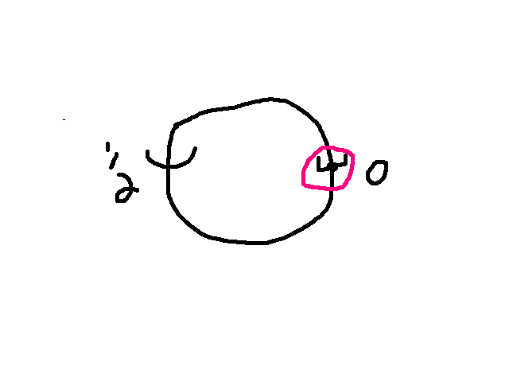

fall 2023
Personal notes of MATH 576 taught by Professor Joel Kamnitzer during the fall semester of 2023
A topological space is a set \(X\) along with a collection of subsets which are called open set
\(\emptyset\), \(X\) are open
let \[\{U_\alpha\}_{\alpha \in I}\] be any collection of open sets, where \(I\) is an arbitrary index set (not necessarily countable), then \[\bigcup_{\alpha \in I} U_\alpha\] is open
if \(U_1\), \(U_2\) are open sets then \(U_1 \cap U_2\) is open (open under finite intersections)
\(\mathbb{R}^n\) with it’s usual open sets : \(U \subset \mathbb{R}^n\) is open if for any \(x \in U\), there exists a \(r > 0\) such that \(B_r(x) \subseteq U\)
We can see that this defines a topology on \(\mathbb{R}^n\), we just need to check some of the conditions. The first and second conditions are trivial to verify. As for the third condition, letting \(U_1\) and \(U_2\) be any open set, we know that, for each \(x \in U_1 \cap U_2\), there are suitable radii \(r_1, r_2\) that we can use to fit an open ball in each one of the latter sets, we simply need to take \(r = \min(r_1,r_2)\), and we are done.
A metric space \((X,d)\) is a set endowed with a distance map \(d \colon X \times X \to \mathbb{R}\), such that
\(d(x,y) > 0\) and \(d(x,y) = 0 \implies x = y\)
\(d(x,y) = d(y,x) \forall x,y \in X\)
\(d(x,z) \leq d(x,y) + d(y,z) \forall x,y,z \in X\)
Any metric space is a topology using the following rule for open sets: Any set \(U \in X\) is open if \(\exists r > 0\) such that \(B_r(x) = \{y \in X \colon d(y,x) < r\} \subseteq U\), by lemma [lem:rntopo]
This does not mean that there is a bijection between metric spaces and topological spaces. many metrics produce the same topology,for example, \(\mathbb{R}^n\) with the \(l_p\) metric generate the same topology for any \(p\)
\(X = \{a,b\}\) the open sets are \(\emptyset, X\) and any of the two elements, \(\{a\}\). Easy to verify that this is a topology.
"Trivial topology", any set \(X\) can be made a toplogy with the open sets being only \(\emptyset\) and \(X\) itself. This is the same topology generate by the metric \(d(x,y) = 0 \forall x,y \in X\).
Every subset of \(X\) is open, so open sets \(= 2^x\), this is the same as setting the distance between two elements to be \(0\) if they are the same and \(1\) if they are distinct, that way we can do something like \(B_{\frac{1}{2}} = \{x\}\), so every subset can be open.
let \(X\) be any set, we can define the cofinite topology : \(U \in X\) is open, if \(U^c\) is finite, and \(\emptyset\) is open. Easy to check that this is a topology.
We can define a topology using closed sets, \(F \subseteq X\) is called closed if \(F^c = X\setminus F\) is open. These closed sets satisfy these conditions
\(\emptyset, X\) are closed
\(\{F_\alpha\}_{\alpha \in I}\) are closed then \(\bigcup_{\alpha \in I} F_\alpha\) is closed.
if \(F_1, F_2\) are closed, then \(F_1 \cup F_2\) is closed.
We supplement this with an example of a cofinite topology, letting \(K\) be a field and \(f \in K[z]\), we denote the vanishing set of \(f\) as \(V(f) = \{a \in K \colon f(a) = 0\}\), for example if \(K = \mathbb{R}\) and \(f = (x-1)(x-2)\), then \(V(f) = \{1,2\}\). \(\{ V(f) \colon f \in K[z]\}\) is the collection of all finite sets, if you set these sets as the closed sets, then you recover the cofinite topology.
\(X\) is a topological space and \(\{x_n\}_{n \geq 1}\) is a sequence in \(X\) (basically a map from \(\mathbb{N} \to X\). We say that \(x \in X\) is a limit of the sequence if, for all open neighborhoods \(U\) (a open subset \(U\) such that \(x \in U\)) of \(x\), \(\exists N\) such that if \(n \geq N\), then \(x_n \in U\).
\(X,Y\) are two topological spaces, then \(f\) is continuous if \(\forall U \subseteq Y\) open, \(f^{-1}(U)\) is open in \(X\)
let \(f \colon X \to Y\) be a continuous function, and \((x_n) \subseteq X\) is a sequence in \(X\), if \(x_n \to x \in X\), then \(f(x_n) \to f(x)\).
Proof. We know that \(x_n \to x\) in \(X\), we want to show that \(f(x_n) \to f(x)\) if \(f\) is continuous. Precisely, we want to show that any open neighborhood of \(f(x)\) contains all but finitely many \(f(x_n)\)s. Let \(U \subseteq Y\) be open open neighborhood of \(f(x)\), since \(f(x) \in U\), then \(x \in f^{-1}(U)\). The latter set is open, by continuity of \(f\), thus there exists an \(N\) such that \(\forall n \geq N\), \(x_n \in f^{-1}(U)\), therefore, \(f(x_n) \in f(f^{-1}(U)) \subseteq U\). ◻
There are some warnings that we need to consider:
A sequence might have more than 1 limit. For example, with the trivial topology, any sequence converges to every other point, since every point has only one open neighborhood, which is the whole set.
The converse of lemma [lem:seqcont] might not be true.
\(f\colon X \to Y\) is called a homeomorphism if
\(f\) is continuous
\(f\) is a bijection
\(f^{-1} \colon Y \to X\) is continuous
In this case, we can write that \(X \cong Y\), such that \(f(f^{-1}(x)) = f^{-1}(f(x)) = id\). warning : First and second condition does not necessarily imply the third.
Here is an example of a function from \([0,1)\) to the half circle

This is an example of the previous warning, we will come back to this later
But first
Let \(X\) be a topological space, and \(A \subseteq X\), then automatically we can define a topology on \(A\) with \[\text{open sets } = \{U \cap A \colon U \text{ is open in } X\}\] Quickly checking that this is a topology on \(A\), the first condition is easily satisfied, the second condition is satisfied via De Morgan’s law (check this), and the third is also satisfied using commutativity of intersection (check this too).
Coming back to the example, \(X = [0,1) \subseteq \mathbb{R}\) is a topology on \([0,1)\). What are the open sets
any \((a,b)\) with \(0 \leq a \leq b \leq 1\) is open, obviously.
any \([0,b)\) with \(b \leq 1\) is open, since, for example, \((-1, b) \cap [0,1)\) is open in \([0,1)\).
Finally, we come back to the example
We are in fact talking about the function \(f\) from the previous example, \(f\) is continuous, easily checkable and it is indeed a bijection. However it doesn’t necessarily provide a function inverse. Indeed, we want to show that \(f^{-1}\) from the circle in \(\mathbb{R}^2\) to \([0,1)\) is not continuous. We can do this with a simple example, intuitively

We can have an alternating sequence that come closer and closer to
the \(0\) point of the circle, however
when you unwrap the circle, those points obviously do not converge on a
straight line.
More formally, we can show that there exists an open set on the line
that is not open on the circle, consider \((0,\frac{1}{2}]\), this is open on \(X = (0,1]\), however in \(\mathbb{R}^2\) open sets are intersections
of (literally) open balls with the circle. The preimage of \((0,\frac{1}{2}]\) on the circle is

As you can see, we cannot fit an open ball around the point \(0\) on the circle, therefore it cannot be open.